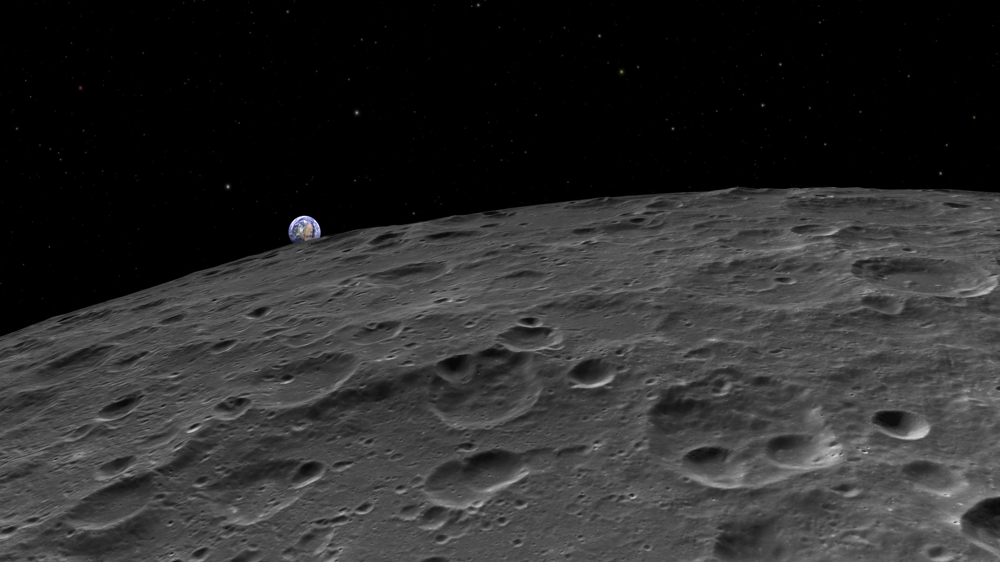

OpenSpace
This page contains different musings about the development of OpenSpace for which I am responsible as Technical Lead and Lead Developer. As said on the main page, OpenSpace is an open-source, collaborative project that aims at visualizing the entire cosmos. The project is a collaboration between Linköping University in Sweden, the American Museum of Natural History in New York, the Community Coordinated Modeling Center at NASA’s Goddard Space Flight Center, New York University, and the University of Utah’s Scientific Computing and Imaging Institute. The software is used for interactive visualization of astronomical and astrophysical phenomena and has been used in a variety of events. On July 15th, 2015 OpenSpace was used to visualize New Horizon’s flyby at Pluto in an event hosted by the American Museum of Natural History called Breakfast at Pluto. Other projects included visualizations of ESA’s Rosetta spacecraft, as well as planetary renderings on Earth and Mars. The most recent visualization was a live presentation in the Hayden Planetarium providing information about the Sun-Earth connection and the effect of Space Weather on it.
Images and a selection videos are available on the project homepage as well as on its YouTube page.
Funding and support for the project is provided by the Knut and Alice Wallenberg Foundation, the Swedish e-Science Research Center, the Excellence Centre at Linköping-Lund in Information Technology, as well as NASA under award No NNX16AB93A.
Planetary Surfaces
One of the large aspects of the software is high-fidelity rendering of planetary surfaces around the solar system. Examples of available datasets include Earth, the Moon, and Mars among others.

Space Weather
Throughout the development of OpenSpace, the Community Coordinated Modeling Center at NASA Goddard Space Flight Center has been driving the development of the platform towards supporting the scientists in analyzing and disseminating space weather phenomena.
Rosetta
After the image projections that were performed with the camera of the New Horizons space craft, we focussed ourselves towards visualizing ESA’s Rosetta mission around the comet 67P/Churyumov–Gerasimenko.
Milky Way
These are some of the initial renderings of the Digital Universe stars combined with the Milkyway background texture that was used for the Dark Universe production.
Pluto Flyby 2015
On July 14th, 2015 the New Horizons space craft finally made its closest approach at Pluto and Charon and acquired lots of images and scientific measurements from the system. During the approach, we organized a worldwide event with around 1000 people watching the events unfold live from within OpenSpace. The event was also live-streamed to YouTube.
Pluto Palooza 2015
On May 14th, 2015 the New Horizons Team’s Pluto Palooza event came to the American Museum of Natural History in New York where we presented our, still ongoing, New Horizons developments to the team.
Imersa 2015
February 2015 in Denver, USA was the first public view of OpenSpace outside of a tight inner circle. Carter Emmart presented the ongoing developments of OpenSpace to a public in the local planetarium. Since it was also the first time of running OpenSpace outside of the planetarium-comfort zone of the Norrköping Dome and the Hayden, it was quite the challenging experience.
About two months into the project
Everything looked very different back in February of 2014. These were some of the first renderings using the Power Scaled Coordinates, a concept that was later abandoned for a Dynamic Scene Graph structure, which in-turn was later abandoned for a more streamlined solution.